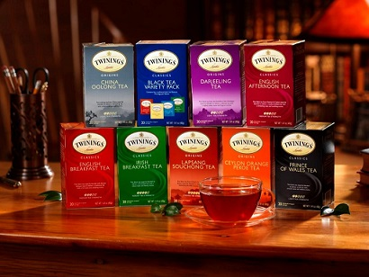
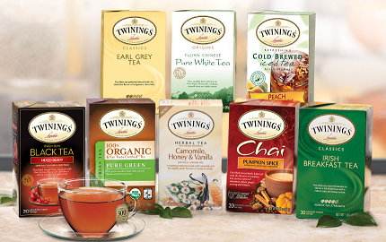

 TWININGS是由英国人托马斯·川宁(Thomas Twining)创立的品牌，西元1706年川宁先生以「Thomas」之名於英国开设咖啡馆，正是TWININGS的前身。 自1706年诞生以来，川宁茶引领着饮茶文化的新潮流。
1837年英国皇室维多利亚女王颁布第一张“皇室委任书”，川宁茶被指定为皇室御用茶，并且此殊荣一直被沿袭至今。皇室成员包括女王本人、女王的母亲和查尔斯王子都非常推崇川宁茶。 1717年，汤马士另外开设红茶专营店-「黄金狮子」，深获维多利亚女皇、乔治五世、爱德华七世等王室的激赏与青睐。更有幸的是川宁茶曾分别于1972年和1977年二次获得“女王勋章”，成为第一家被获准出口的茶公司，从而成功地进入到世界茶文化的市场。 
“The world in your cup”是对川宁茶最好的诠释！川宁从全世界各个著名的产茶区采摘最新鲜的茶叶，臻选最优良的品种作为川宁经典红茶，川宁的每一个调配专家不但对各产茶国有着广泛的了解， 更对某一个特定的产茶区域有着集中深入的专业知识。自1706年发展至今，川宁的调配师们已经调配出了近200种口味的红茶，300多年来，TWININGS川宁力臻完美，并不断提供新的口味，以使全球人士都能喝上顶级品质的TWININGS川宁茶。